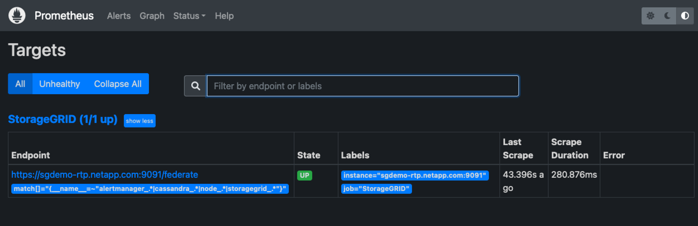
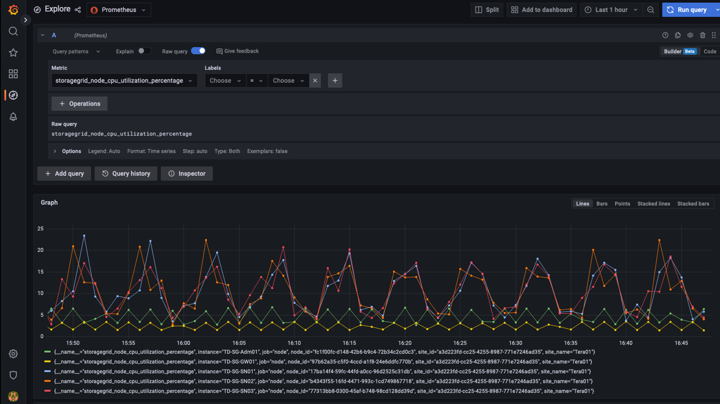
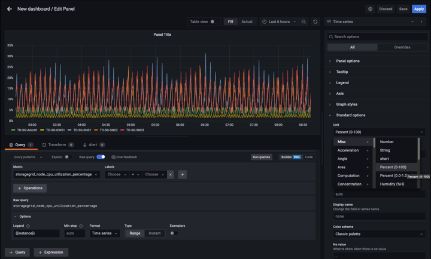
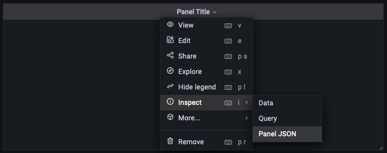

经验证的第三方解决方案
经验证的第三方解决方案
使用Prometheus和Grafana延长指标保留期限
 建议更改
建议更改
本技术报告详细说明了如何为NetApp StorageGRID 11.6配置外部Prometheus和Grafana服务。
简介
StorageGRID 使用Prometheus存储指标、并通过内置的Grafana信息板对这些指标进行可视化。通过配置客户端访问证书并为指定客户端启用Prometheus访问、可以从StorageGRID 安全地访问Prometheus指标。目前、此指标数据的保留受管理节点存储容量的限制。为了获得更长的持续时间并能够创建这些指标的自定义可视化效果、我们将部署一个新的Prometheus和Grafana服务器、配置我们的新服务器以从StorageGRID实例中擦除这些指标、并使用对我们重要的指标构建一个信息板。您可以获取有关在中收集的Prometheus指标的详细信息 "StorageGRID 文档"。
联合Prometheus
实验室详细信息
在本示例中、我将使用StorageGRID 11.6节点的所有虚拟机以及Debian 11服务器。StorageGRID 管理界面配置了一个公共信任的CA证书。本示例将不会介绍StorageGRID 系统或Debian Linux安装的安装和配置过程。您可以使用Prometheus和Grafana支持的任何Linux模式。Prometheus和Grafana都可以安装为Docker容器、从源代码构建或预编译的二进制文件。在此示例中、我将直接在同一Debian服务器上安装Prometheus和Grafana二进制文件。从下载并按照基本安装说明进行操作 https://prometheus.io 和 https://grafana.com/grafana/ 。
为Prometheus客户端访问配置StorageGRID
要访问StorageGRID Stored Prometheus指标、您必须生成或上传具有专用密钥的客户端证书、并为客户端启用权限。StorageGRID 管理接口必须具有SSL证书。此证书必须由Prometheus服务器信任、或者由可信CA信任、如果是自签名证书、则此证书必须手动受信任。要了解更多信息、请访问 "StorageGRID 文档"。
-
在StorageGRID 管理界面中、选择左下方的"configuration"、然后在第二列的"Security"下单击Certificates。
-
在"证书"页面上、选择"客户端"选项卡、然后单击"添加"按钮。
-
提供要授予访问权限的客户端的名称并使用此证书。单击"允许用户"前面的"权限"下的框、然后单击"继续"按钮。

-
如果您拥有CA签名的证书、则可以选择"上传证书"单选按钮、但在我们的情况下、我们将通过选择"生成证书"单选按钮让StorageGRID 生成客户端证书。此时将显示要填写的必填字段。输入客户端服务器的FQDN、服务器的IP、主题和有效天数。然后单击"生成"按钮。


|
Be mindful of the certificate days valid entry as you will need to renew this certificate in both StorageGRID and the Prometheus server before it expires to maintain uninterrupted collection. |
-
下载证书对等文件和专用密钥对等文件。

|
|
This is the only time you can download the private key, so make sure you do not skip this step. |
准备Linux服务器以安装Prometheus
在安装Prometheus之前、我希望为我的环境做好准备、让Prometheus用户、目录结构做好准备、并为指标存储位置配置容量。
-
创建Prometheus用户。
sudo useradd -M -r -s /bin/false Prometheus -
为Prometheus、客户端证书和指标数据创建目录。
sudo mkdir /etc/Prometheus /etc/Prometheus/cert /var/lib/Prometheus -
我使用ext4文件系统格式化了用于指标保留的磁盘。
mkfs -t ext4 /dev/sdb
-
然后、我将文件系统挂载到Prometheus指标目录。
sudo mount -t auto /dev/sdb /var/lib/prometheus/
-
获取用于指标数据的磁盘的UUID。
sudo ls -al /dev/disk/by-uuid/ lrwxrwxrwx 1 root root 9 Aug 18 17:02 9af2c5a3-bfc2-4ec1-85d9-ebab850bb4a1 -> ../../sdb
-
在/etc/fstab/中添加一个条目、使挂载在重新启动后仍会使用/dev/sdb的uuid。
/etc/fstab UUID=9af2c5a3-bfc2-4ec1-85d9-ebab850bb4a1 /var/lib/prometheus ext4 defaults 0 0
安装和配置Prometheus
现在、服务器已准备就绪、我可以开始安装Prometheus并配置此服务。
-
提取Prometheus安装包
tar xzf prometheus-2.38.0.linux-amd64.tar.gz -
将二进制文件复制到/usr/local/bin、并将所有权更改为先前创建的Prometheus用户
sudo cp prometheus-2.38.0.linux-amd64/{prometheus,promtool} /usr/local/bin sudo chown prometheus:prometheus /usr/local/bin/{prometheus,promtool} -
将控制台和库复制到/etc/Prometheus
sudo cp -r prometheus-2.38.0.linux-amd64/{consoles,console_libraries} /etc/prometheus/ -
将先前从StorageGRID 下载的客户端证书和专用密钥对等文件复制到/etc/Prometheus/Certs
-
创建Prometheus配置YAML文件
sudo nano /etc/prometheus/prometheus.yml -
插入以下配置。作业名称可以是您所需的任何名称。将"-targets"更改为管理节点的FQDN、如果更改了证书名称和专用密钥文件名、请更新tls_config部分以使其匹配。然后保存文件。如果您的网格管理界面正在使用自签名证书、请下载此证书并将其与具有唯一名称的客户端证书一起放置、然后在tls_config部分中添加ca_file：/etc/Prometheus/Cert/UIcert.pem
-
在此示例中、我将收集以alertmanager、Cassandra、node和StorageGRID 开头的所有指标。您可以在中查看有关Prometheus指标的详细信息 "StorageGRID 文档"。
# my global config global: scrape_interval: 60s # Set the scrape interval to every 15 seconds. Default is every 1 minute. scrape_configs: - job_name: 'StorageGRID' honor_labels: true scheme: https metrics_path: /federate scrape_interval: 60s scrape_timeout: 30s tls_config: cert_file: /etc/prometheus/cert/certificate.pem key_file: /etc/prometheus/cert/private_key.pem params: match[]: - '{__name__=~"alertmanager_.*|cassandra_.*|node_.*|storagegrid_.*"}' static_configs: - targets: ['sgdemo-rtp.netapp.com:9091']
-
|
|
如果网格管理界面使用的是自签名证书、请下载此证书并将其与具有唯一名称的客户端证书一起放置。在tls_config部分中、将证书添加到客户端证书和专用密钥行上方 ca_file: /etc/prometheus/cert/UIcert.pem |
-
将/etc/Prometheus和/var/lib/Prometheus中所有文件和目录的所有权更改为Prometheus用户
sudo chown -R prometheus:prometheus /etc/prometheus/ sudo chown -R prometheus:prometheus /var/lib/prometheus/ -
在/etc/systemd/system中创建一个Prometheus服务文件
sudo nano /etc/systemd/system/prometheus.service -
插入以下行、请注意#-storage.tsdb.retention.time=1y#、它会将指标数据的保留期限设置为1年。或者、您也可以使用#-storage.tsdb.retention.size=300GiB#根据存储限制确定保留期限。这是设置指标保留的唯一位置。
[Unit] Description=Prometheus Time Series Collection and Processing Server Wants=network-online.target After=network-online.target [Service] User=prometheus Group=prometheus Type=simple ExecStart=/usr/local/bin/prometheus \ --config.file /etc/prometheus/prometheus.yml \ --storage.tsdb.path /var/lib/prometheus/ \ --storage.tsdb.retention.time=1y \ --web.console.templates=/etc/prometheus/consoles \ --web.console.libraries=/etc/prometheus/console_libraries [Install] WantedBy=multi-user.target -
重新加载systemd服务以注册新的Prometheus服务。然后启动并启用Prometheus服务。
sudo systemctl daemon-reload sudo systemctl start prometheus sudo systemctl enable prometheus -
检查服务是否运行正常
sudo systemctl status prometheus● prometheus.service - Prometheus Time Series Collection and Processing Server Loaded: loaded (/etc/systemd/system/prometheus.service; enabled; vendor preset: enabled) Active: active (running) since Mon 2022-08-22 15:14:24 EDT; 2s ago Main PID: 6498 (prometheus) Tasks: 13 (limit: 28818) Memory: 107.7M CPU: 1.143s CGroup: /system.slice/prometheus.service └─6498 /usr/local/bin/prometheus --config.file /etc/prometheus/prometheus.yml --storage.tsdb.path /var/lib/prometheus/ --web.console.templates=/etc/prometheus/consoles --web.con> Aug 22 15:14:24 aj-deb-prom01 prometheus[6498]: ts=2022-08-22T19:14:24.510Z caller=head.go:544 level=info component=tsdb msg="Replaying WAL, this may take a while" Aug 22 15:14:24 aj-deb-prom01 prometheus[6498]: ts=2022-08-22T19:14:24.816Z caller=head.go:615 level=info component=tsdb msg="WAL segment loaded" segment=0 maxSegment=1 Aug 22 15:14:24 aj-deb-prom01 prometheus[6498]: ts=2022-08-22T19:14:24.816Z caller=head.go:615 level=info component=tsdb msg="WAL segment loaded" segment=1 maxSegment=1 Aug 22 15:14:24 aj-deb-prom01 prometheus[6498]: ts=2022-08-22T19:14:24.816Z caller=head.go:621 level=info component=tsdb msg="WAL replay completed" checkpoint_replay_duration=55.57µs wal_rep> Aug 22 15:14:24 aj-deb-prom01 prometheus[6498]: ts=2022-08-22T19:14:24.831Z caller=main.go:997 level=info fs_type=EXT4_SUPER_MAGIC Aug 22 15:14:24 aj-deb-prom01 prometheus[6498]: ts=2022-08-22T19:14:24.831Z caller=main.go:1000 level=info msg="TSDB started" Aug 22 15:14:24 aj-deb-prom01 prometheus[6498]: ts=2022-08-22T19:14:24.831Z caller=main.go:1181 level=info msg="Loading configuration file" filename=/etc/prometheus/prometheus.yml Aug 22 15:14:24 aj-deb-prom01 prometheus[6498]: ts=2022-08-22T19:14:24.832Z caller=main.go:1218 level=info msg="Completed loading of configuration file" filename=/etc/prometheus/prometheus.y> Aug 22 15:14:24 aj-deb-prom01 prometheus[6498]: ts=2022-08-22T19:14:24.832Z caller=main.go:961 level=info msg="Server is ready to receive web requests." Aug 22 15:14:24 aj-deb-prom01 prometheus[6498]: ts=2022-08-22T19:14:24.832Z caller=manager.go:941 level=info component="rule manager" msg="Starting rule manager..." -
现在、您应该能够浏览到Prometheus服务器的UI http://Prometheus-server:9090 并查看UI

-
在"Status" Targets下、您可以看到我们在Prometheus.yml中配置的StorageGRID 端点的状态


-
在图形页面上、您可以执行测试查询并验证数据是否已成功擦除了。例如、在查询栏中输入"storagegRid_node_cpu_utilization_percentage "、然后单击执行按钮。

安装和配置Grafana
在Prometheus安装完毕并正常工作之后、我们可以继续安装Grafana并配置信息板
Grafana安装
-
安装最新的企业版Grafana
sudo apt-get install -y apt-transport-https sudo apt-get install -y software-properties-common wget sudo wget -q -O /usr/share/keyrings/grafana.key https://packages.grafana.com/gpg.key -
为稳定版本添加此存储库：
echo "deb [signed-by=/usr/share/keyrings/grafana.key] https://packages.grafana.com/enterprise/deb stable main" | sudo tee -a /etc/apt/sources.list.d/grafana.list -
添加存储库后。
sudo apt-get update sudo apt-get install grafana-enterprise -
重新加载systemd服务以注册新的grafana服务。然后启动并启用Grafana服务。
sudo systemctl daemon-reload sudo systemctl start grafana-server sudo systemctl enable grafana-server.service -
现在、Grafana已安装并正在运行。打开浏览器访问HTTP：//Prometheus-server：3000时、您将看到Grafana登录页面。
-
默认登录凭据为admin/admin、您应根据提示设置新密码。
为StorageGRID 创建Grafana信息板
在Grafana和Prometheus安装并运行的情况下、现在是时候通过创建数据源和构建信息板来连接这两者了
-
在左侧窗格中、展开"配置"并选择"数据源"、然后单击"添加数据源"按钮
-
Prometheus将是可供选择的顶级数据源之一。如果不是、请使用搜索栏找到"Prometheus"
-
通过输入Prometheus实例的URL以及与Prometheus间隔匹配的擦除间隔来配置Prometheus源。我还禁用了警报部分、因为我未在Prometheus上配置警报管理器。

-
输入所需设置后、向下滚动到底部、然后单击"Save & test"(保存并测试)
-
配置测试成功后、单击Explore按钮。
-
在"浏览"窗口中、您可以使用我们使用"storagegrid node_cpu_utilization_percentage "测试的相同指标、然后单击"运行查询"按钮

-
-
现在、我们已配置数据源、可以创建一个信息板。
-
在左侧窗格中、展开Dashboards、然后选择"+" new Dashboard"
-
选择"添加新面板"
-
通过选择指标来配置新面板、我将再次使用"storagegrid node_cpu_utilization_percentage "、输入面板标题、展开底部的"选项"、并将图例更改为自定义、然后输入"｛｛instance｝｝"来定义节点名称、并在右侧窗格的"标准选项"下将"单元"设置为"Misc 100/percent (0%)"。然后单击"应用"将面板保存到信息板。

-
-
我们可以继续为所需的每个指标构建这样的信息板、但幸运的是、StorageGRID 已经拥有包含面板的信息板、我们可以复制到自定义信息板中。
-
从StorageGRID 管理界面的左侧窗格中、选择"Support"、然后在"Tools"列的底部单击"Metrics "。
-
在指标中、我将选择中间列顶部的"网格"链接。

-
在网格信息板中、我们选择"已用存储-对象元数据"面板。单击小下箭头和面板标题的末尾以下拉菜单。从此菜单中选择"检查"和"面板JSON"。

-
复制JSON代码并关闭窗口。

-
在新信息板中、单击图标以添加新面板。

-
应用新面板而不进行任何更改
-
就像使用StorageGRID 面板一样、检查JSON。从StorageGRID 面板中删除所有JSON代码并将其替换为复制的代码。

-
编辑新面板、在右侧、您将看到一条带有"迁移"按钮的迁移消息。单击按钮、然后单击"应用"按钮。


-
-
将所有面板安装到位并根据需要进行配置后。单击右上角的磁盘图标以保存信息板、并为您的信息板指定一个名称。
结论
现在、我们推出了一款具有可自定义数据保留和存储容量的Prometheus服务器。这样、我们就可以继续构建自己的信息板、其中包含与我们的运营最相关的指标。您可以获取有关在中收集的Prometheus指标的详细信息 "StorageGRID 文档"。
作者：Aron Klein